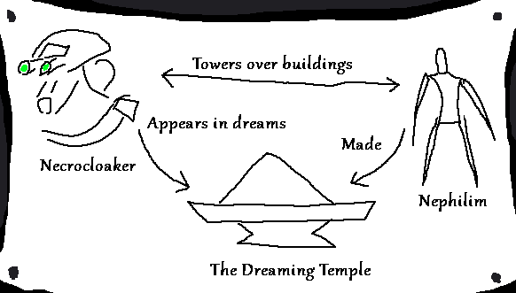

Payday 2 is a Heat inspired crime themed player verus enviroment game with very inconsistent tonal shifts throughout it's decade long life cycle, created by Overkill Software and owned by Starbreeze Studios, here we aren't focusing on that edgy nonsense. Here, we're focusing on two very unusual aspects I see a link between, the fun canonically a dream maps and the absurd conspiracy and ancient aliens type stuff ARG that happened at the tail end of it's plot.
So first things first, there's a few halloween maps, a giant version of one of the special enemies (a cloaker)
called the Necrocloaker appears on some of them, notably Prison Nightmare and Lab Rats, with an implied
connection in the earlier Cursed Kill Room map. These maps are within the story of the game, bad dreams,
and cloakers in the normal games lore are like already nightmare police brutality ninjas so them appearing in
the bad guy's (the people you play as) nightmares makes sense.
And the other half of the theory, so in the ARG and the stuff surrounding it it's revealed there's these couple
of big ancient aliens that were around, possibly built the pyramids because 4 of them appear on on of their
tablets, pyramid of the sun, the great pyamid of giza, and the great ziggurat. The fourth one I've neglected to
name is called the Dreaming Temple, and it's located in the middle of the pacific, around the same place Cthulhu
sleeps according to Lovecraftian mythos. The Dreaming Temple will be important later. These ancient aliens,
called the Nephilim, are visualized as big shadowy humanoids often obscured by large storms or clouds of smoke,
and are implied to be responsible for the Whitehouse burning of 1812 in the setting for reasons unimportant for
this current theory (probably).
With the dots set, let me connect them.

This all hinges on the connection of the Dreaming Temple, it's the big link between the Necrocloaker and the Nephilim. Mostly hinging on the established fact that the Necrocloaker's appearances are only in dreams. This connection could explain why the Necrocloaker is so god damn big in these dreams, it's because he himself is a Nephilim set out to mess with the Payday crew. This theory unfortunately starts to break at the seams when triyng to figure out motivations or plot signifigance, like why even bother bullying the crew in their nightmares. Well it falls apart at least from where I look at it, but plot holes are par for the course in this series honestly, so I'm not that dissapointed about parts not adding up fully. Parts of the actual listed story they tell you upfront has a bunch of parts that don't add up either. ¯\_(ツ)_/¯